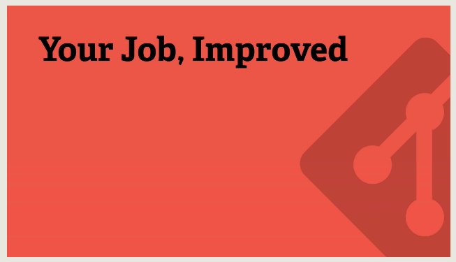
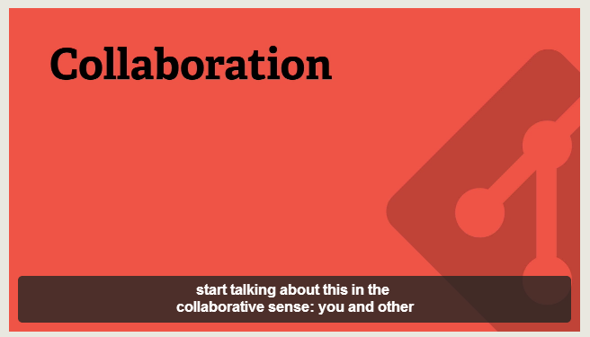
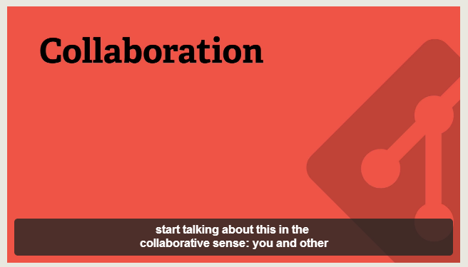
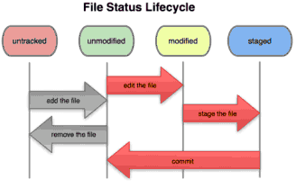

{{ module.name }}
|
|
|
All I know about Git
Version Control

 


File Lifecycle Status
Remember that each file in your working directory can be in one of two states: tracked or untracked.
- Tracked files are files that were in the last snapshot; they can be unmodified, modified, or staged.
- Untracked files are everything else - any files in your working directory that were not in your last snapshot and are not in your staging area.
When you first clone a repository, all of your files will be tracked and unmodified because you just checked them out and haven’t edited anything.
As you edit files, Git sees them as modified, because you’ve changed them since your last commit. You stage these modified files and then commit all your staged changes, and the cycle repeats.
Branches

Branches are an excellent way to not only work safely on features or experiments, but they are also the key element in creating Pull Requests on GitHub.
Resources
- YouTube, (2014). GitHub Training & Guides. [online] Available at: https://www.youtube.com/channel/UCP7RrmoueENv9TZts3HXXtw [Accessed 23 Jul. 2014].
- Try Git, (2014). Try Git. [online] Available at: https://try.github.io/levels/1/challenges/1 [Accessed 23 Jul. 2014].
- Chacon, S. (2009). Pro Git. 1st ed. Berkeley, CA: Apress.
- Rogerdudler.github.io, (2014). git - the simple guide - no deep shit!. [online] Available at: http://rogerdudler.github.io/git-guide/ [Accessed 24 Jul. 2014].
{{ class.name }}
{{ currentFunction.name }}
{{ currentFunction.signature }}
Alias: {{ alias }}
{{ currentFunction.code }}